We give two approaches to the dual for this question:
(i) write the problem as an inequality problem in the nonbasics:
Also change the direction of the inequalities:
This problem has dual
We convert this into standard form with nonnegative right hand side, with slack variables v. We only introduce an artificial variable w1 for the first constraint, since v2 can be the initial basic variable for the second constraint. We use an initial tableau for the artificial problem of
Subtracting the first constraint from the objective gives an optimal tableau:
Since the optimal value of the artificial problem is positive, the original dual problem is infeasible. The first dual constraint cannot be satisfied, corresponding to the ray for the x4 column.
(ii) Split equalities into two sets of inequalities:
Primal problem can be written
which has dual
This is equivalent to the standard form problem
 | (1) |
Initial simplex tableau for dual problem is

The first step in the method of artificial variables is to ensure all terms on right hand side are nonnegative. We multiply the third constraint by -1. Then, since we no longer have an identity, we add an artificial variable z1 for the third constraint. The artificial problem is

Pivot to canonical form:

Bring u3 into the basis:

Bring u1 into the basis:

This shows the artificial problem has positive optimal value, so the original dual problem is infeasible. If we delete the artificial column, we get a tableau for the dual problem that is in infeasible form 2:
The fourth dual constraint cannot be satisfied (we have w4 positive), corresponding to the ray for the x4 column.
- a.
-

- b.
- Standard form:
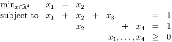 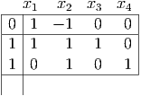 - c.
- Pivot with x3 entering the basis:
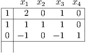 Optimal x* = (0, 1, 0, 0)T with value z* = -1.
Pivot instead with x4 entering the basis:
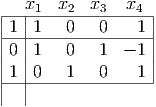 Optimal x* = (0, 1, 0, 0)T with value z* = -1.
- d.
- Optimal dual values are reduced costs of the original slack variables.
In first optimal tableau, get y1 = 1, y2 = 0. We can see from the picture that if the first constraint becomes -x1 - x2 ≥-1 + t then the objective function value increases to -1 + t, with new optimal solution x = (0, 1 - t)T . (Valid for 0 ≤ t ≤ 1.) Hence, the shadow price of the first constraint is 1, which is indeed y1.

In second optimal tableau, get y1 = 0, y2 = 1. We can see from the picture that if the second constraint becomes -x2 ≥-1 + t then the objective function value increases to -1 + t, with new optimal solution x = (0, 1 - t)T . (Valid for 0 ≤ t ≤ 1.) Hence, the shadow price of the seond constraint is 1, which is indeed y2.

- e.
- Dual is
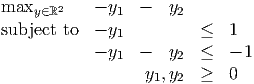 
- f.
- Standard form of dual is
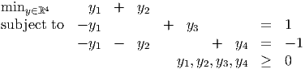 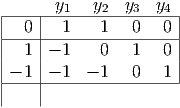 - g.
- This tableau is not in canonical form. We could use the method of artificial variables to
get a standard form. Alternatively, we can see that pivoting in the second row and the
and y2 column immediately gives a standard form:
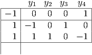 This tableau is optimal.
We can pivot to bring y1 into the basis and remain optimal:
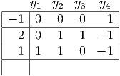 - h.
- In each tableau, the optimal primal values are the reduced costs of the dual
slacks, namely x = (0, 1) in both cases, which agrees with the solution found
earlier.
Modifying the first dual constraint to -y1 ≤ 1 + t doesn’t change the optimal solution, verifying the shadow price x1 for the first dual constraint is zero:

Modifying the second dual constraint to -y1 - y2 ≤-1 + t changes the optimal value to -1 + t, verifying the shadow price x2 for the second dual constraint is 1:

- a.
- Dual is

- b.
- Standard form:

- c.
- Solve the dual:
![|--|--y1----y2----y3----y4---y5---y6--y7---y8---y9--y10--w1--w2--w3---w4--w5---w6-|
|0-|--30----10----20----15----5--30---10---20---15----5---0---0----0---0----0---0-|
|4 | 1 0 1 0 0 - 1 0 - 1 0 0 1 0 0 0 0 0 |
|1 | 1 0 0 1 0 - 1 0 0 - 1 0 0 1 0 0 0 0 |
| | |
|2 | 1 0 0 0 1 - 1 0 0 0 - 1 0 0 1 0 0 0 |
|3 | 0 1 1 0 0 0 - 1 - 1 0 0 0 0 0 1 0 0 |
|2 | 0 1 0 1 0 0 - 1 0 - 1 0 0 0 0 0 1 0 |
|1 | 0 1 0 0 1 0 - 1 0 0 - 1 0 0 0 0 0 1 |
|--|------------------------------------------------------------------------------
| |](hw4sol202226x.png)
Pivot with y1 entering the basis:
![y y y y y y y y y y w w w w w w
|---|1-----2-----3----4----5---6----7----8-----9---10---1----2---3----4---5----6|
|30-|0----10----20--15---- 5---0---10---20----15----5---0---30---0----0---0---0-|
| 3 |0 0 1 - 1 0 0 0 - 1 1 0 1 - 1 0 0 0 0 |
| 1 |1 0 0 1 0 - 1 0 0 - 1 0 0 1 0 0 0 0 |
| 1 |0 0 0 - 1 1 0 0 0 1 - 1 0 - 1 1 0 0 0 |
| 3 |0 1 1 0 0 0 - 1 - 1 0 0 0 0 0 1 0 0 |
| | |
| 2 |0 1 0 1 0 0 - 1 0 - 1 0 0 0 0 0 1 0 |
|-1-|0-----1-----0----0---1----0----1----0-----0----1---0----0---0----0---0---1--
| |](hw4sol202227x.png)
Pivot with y3 entering the basis, choose w4 to leave basis:
![|---y1---y2--y3--y4---y5---y6----y7---y8----y9--y10-w1---w2---w3--w4---w5--w6--|
|90 |0 10 0 15 - 5 0 - 10 0 - 15 5 0 30 0 20 0 0 |
|-0-|0----1--0----1----0----0-----1----0----1----0----1----1---0----1---0----0-|
| | |
| 1 |1 0 0 1 0 - 1 0 0 - 1 0 0 1 0 0 0 0 |
| 1 |0 0 0 - 1 1 0 0 0 1 - 1 0 - 1 1 0 0 0 |
| 3 |0 1 1 0 0 0 - 1 - 1 0 0 0 0 0 1 0 0 |
| 2 |0 1 0 1 0 0 - 1 0 - 1 0 0 0 0 0 1 0 |
| 1 |0 1 0 0 1 0 - 1 0 0 - 1 0 0 0 0 0 1 |
|---|--------------------------------------------------------------------------|
| |](hw4sol202228x.png)
Pivot with y5 entering the basis, choose w3 to leave basis:
![----y1---y2--y3---y4--y5--y6----y7---y8----y9--y10--w1--w2---w3---w4--w5---w6--
|95 |0 10 0 10 0 0 - 10 0 - 10 0 0 25 5 20 0 0 |
|---|-------------------------------------------------------------------------|
| 0 |0 - 1 0 - 1 0 0 1 0 1 0 1 - 1 0 - 1 0 0 |
| 1 |1 0 0 1 0 - 1 0 0 - 1 0 0 1 0 0 0 0 |
| 1 |0 0 0 - 1 1 0 0 0 1 - 1 0 - 1 1 0 0 0 |
| 3 |0 1 1 0 0 0 - 1 - 1 0 0 0 0 0 1 0 0 |
| 2 |0 1 0 1 0 0 - 1 0 - 1 0 0 0 0 0 1 0 |
| | |
|-0-|0----1---0----1--0----0-----1----0-----1----0---0----1----1---0----0---1--
| |](hw4sol202229x.png)
Pivot with y7 entering the basis:
![|----y1--y2--y3---y4--y5---y6--y7---y8--y9--y10--w1---w2---w3---w4--w5--w6--|
|95 |0 0 0 0 0 0 0 0 0 0 10 15 5 10 0 0 |
|--0-|0--- 1--0----1---0----0---1---0----1----0---1---- 1---0----1---0----0-|
| | |
| 1 |1 0 0 1 0 - 1 0 0 - 1 0 0 1 0 0 0 0 |
| 1 |0 0 0 - 1 1 0 0 0 1 - 1 0 - 1 1 0 0 0 |
| 3 |0 0 1 - 1 0 0 0 - 1 1 0 1 - 1 0 0 0 0 |
| 2 |0 0 0 0 0 0 0 0 0 0 1 - 1 0 - 1 1 0 |
| 0 |0 0 0 0 0 0 0 0 0 0 1 0 - 1 - 1 0 1 |
|----|----------------------------------------------------------------------|
| |](hw4sol202230x.png)
Optimal dual value for the min value of the max problem is -95. So the optimal value of the dual problem is +95.
- d.
- Optimal x*: This comes directly from the reduced costs for w
1,…,w6. In particular, we
get x11 = 10, x12 = 15, x13 = 5, x21 = 10, x22 = x23 = 0. It can be checked that x* is
feasible with value 95.
We have multiple optimal dual solutions: we can pivot to bring in y4 or y9; also, the y2, y6, y8, and y10 columns all lead to optimal rays.
We can pivot in the last row and the w3 column and still remain in optimal form:
![|---y1---y2--y3---y4--y5---y6--y7--y8---y9--y10--w1---w2---w3--w4---w5--w6--|
|95-|0----0---0----0---0----0--0----0----0----0---15--15----0----5---0----5-|
| 0 |0 - 1 0 - 1 0 0 1 0 1 0 1 - 1 0 - 1 0 0 |
| 1 |1 0 0 1 0 - 1 0 0 - 1 0 0 1 0 0 0 0 |
| | |
| 1 |0 0 0 - 1 1 0 0 0 1 - 1 1 - 1 0 - 1 0 1 |
| 3 |0 0 1 - 1 0 0 0 - 1 1 0 1 - 1 0 0 0 0 |
| 2 |0 0 0 0 0 0 0 0 0 0 1 - 1 0 - 1 1 0 |
| 0 |0 0 0 0 0 0 0 0 0 0 - 1 0 1 1 0 - 1 |
|---|-----------------------------------------------------------------------
| |](hw4sol202231x.png)
This gives another primal optimal solution from the reduced costs for w1,…,w6. In particular, we get x11 = 15, x12 = 15, x13 = 0, x21 = 5, x22 = 0, x23 = 5. It can be checked that x* is feasible with value 95.
- e.
- Initial tableau for the primal is
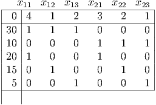 This is not optimal because it’s not in canonical form.
- f.
- Pivoting as suggested in the hint gives the tableau
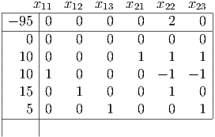 Deleting the row of zeroes gives a tableau in optimal form:
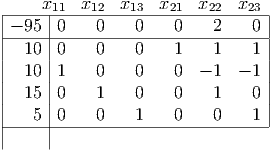 Note that this LP has multiple optimal solutions, since the nonbasic variable x23 has zero reduced cost. Pivoting so x23 replaces x13 in the basis gives the new optimal tableau
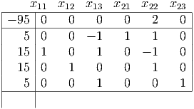 The two primal optimal solutions found agree with those found in part (d).
- g.
- The optimal values of the original dual variables include y* = (1, 0, 3, 0, 1)T , coming
from the tableau in part (c). The optimal values of the y variables can’t be read off the
optimal primal tableau, because the constraints in the primal problem are
equalities.
On the other hand, the optimal dual slacks w do appear as the reduced costs for the primal variables in the optimal primal tableaus.